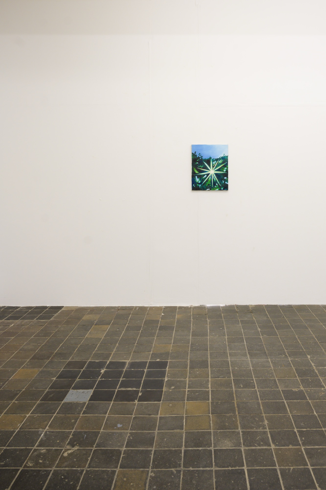
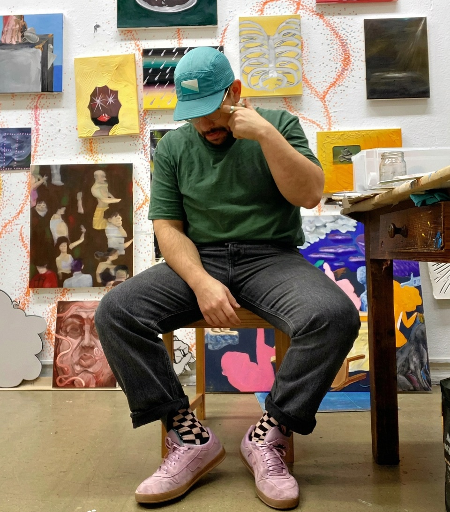
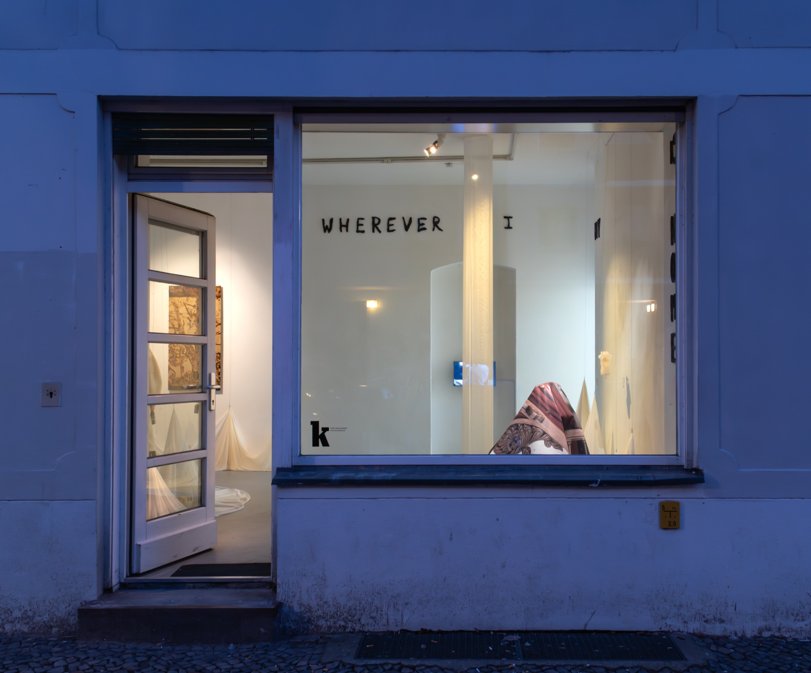
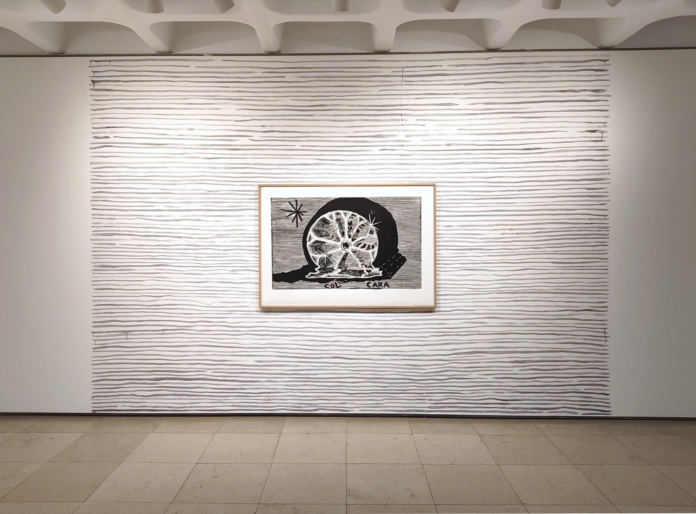

OFF FIELD
2026
On the occasion of the invitation to participate in the exhibition Off-Field, I was left with a sense of the defining rule in football, which is off-side.
As the child of immigrants growing up in the fractured society of South Africa's apartheid regime, I was introduced to drawing at an early age by watching the Khoi-San people paint African landscapes onto animal hides from the savanna. Due to the prevailing violence, my family relocated to the island of Madeira, where I experienced a simple island lifestyle and traditional farming methods. I also came into contact with the skate subculture; this street culture served as my initial gateway to art.
My work draws from diverse sources and manifests in a wide variety of forms. As an artist, I explore life's mysteries and the small, chance occurrences that shape our perception of reality. I take particular pleasure in recontextualizing everyday objects or even iconic motifs, whether through wordplay in titles or the specific arrangement of the depicted subjects. Historical facts, clichés, and the randomness of life serve as sources of inspiration that structure my visual narratives.


On the occasion of the invitation to participate in the exhibition Off-Field, I was left with a sense of the defining rule in football, which is off-side.
Scrolls departs from the two artists' desire to return to primitive modes of representation, combining works of drawing with installative paintings.

Wherever I Lay My Head Is Home.

Whoever enters the space of Canto da Teia does not observe: they are captured.

On the subject of polarity and the things which push and pull, the invisible forces of creation.

A Couve e o Plano das Coisas.